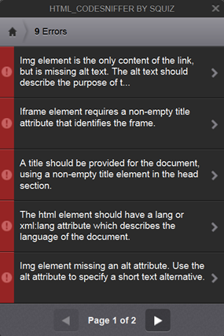
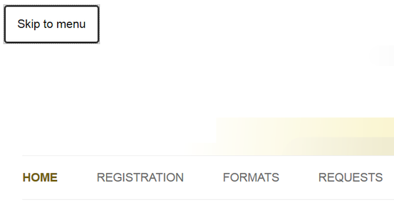

Evaluating Your Website for Accessibility Compliance and WCAG 2.1
Cynthia Ng
@TheRealArty
October 4, 2018
Brief Overview
- Web Accessibility
- Types of Disabilities
- Assistive Technology
- Policy & Legislation
- WCAG 2.x
- Auditing Your Website
- Accessibility Statement
- Take Away
What is Web Accessibility?
Web accessibility means that people with disabilities can use the Web.W3C Web Accessibility Initiative. (2005). What is Web Accessibility. Introduction to Web Accessibility. http://www.w3.org/WAI/intro/accessibility.php- W3C Web Accessibility Initiative (WAI)
Types of Disabilities
- visual
- auditory
- physical/motor
- touch
- learning
Assistive Technology
- screen readers
- text-to-speech, speech-to-text
- mouse alternatives (e.g. joysticks)
- screen magnifiers
- keyboard only
- touch screen
- and more
Policy & Legislation
Accessible Canada Act, C-81
First Reading: June 20, 2018
Parliament of Canada. (2018). C-81: An Act to ensure a barrier-free Canada House Government Bill.https://www.parl.ca/LegisInfo/BillDetails.aspx?billId=9990870&Language=ELegislation in Canada
- Accessibility for Ontarians with Disabilities Act (AODA) (2005)
- Canadian Human Rights Act (1977)
- Standard on Web Accessibility (2011) for Government of Canada
Policy
- organization
- grants
- sponsorship
Web Content Accessibility Guidelines (WCAG)
by World Wide Web Consortium (W3C)
- 2.0 (Dec 2008)
- 2.1 (Jun 2018)
Sections of WCAG
- Perceivable
- Operable
- Understandable
- Robust
- Conformance
Some Notes on WCAG
- Level: A, AA, AAA
- Level AA recommended
- WCAG Quick Ref makes life easier
- Elements and Guidelines Overlap
Understanding Web Accessibility & WCAG
- A Practical Guide to Improving Web Accessibility (WeaveUX, Issue 7, October 2017)
- A Practical Starter Guide on Developing Accessible Websites (Code4Lib Journal, Issue 37, July 2017)
- WCAG Blog Post Series
- Accessibility Tag Blog Posts
Auditing and Evaluating Your Website
Simulation
Colorblind Web Page Filter
Fangs (Firefox Add-on)
Evaluation
W3C validator
HTML Codesniffer (bookmarklet)
WCAG Contrast Checker (Firefox Add-on)
WAVE Toolbar
Manual Tests with Devices
Mouse
Touch screen
Keyboard
Automated Testing Frameworks
Demo: HTML Codesniffer
Demo: WAVE Toolbar
Demo: Keyboard Accessibility
What's New in WCAG 2.1
Non-Text Contrast 1.4.11
Responsive Design
Orientation 1.3.4, Reflow 1.4.10, Text Spacing 1.4.12

Form Fields Extended
- Identify Input Purpose 1.3.5: Use autocomplete for autofill
- Label in Name 2.5.3: Visible labels = Accessible names
- Status Messages 4.1.3: Use appropriate role without changing focus
User Input Extended
- Character Key Shortcuts 2.1.4: Only on focus, can disable, or remap
- Motion Actuation 2.5.4: Can disable, provide equivalent non-motion interaction
- Pointer Gestures 2.5.1: Single pointer alternative to complex gestures
- Pointer Cancellation 2.5.2: Use default up-event behaviour, and allow abort/undo
- Content on Hover or Focus 1.4.13: Make persistent, hoverable, and dismissable
Ask Your Users
Accessibility Statement
- WCAG Conformance Claims
- Partial Conformance Claim with 3rd Party Content
Take Away
Make it easy to contact you.